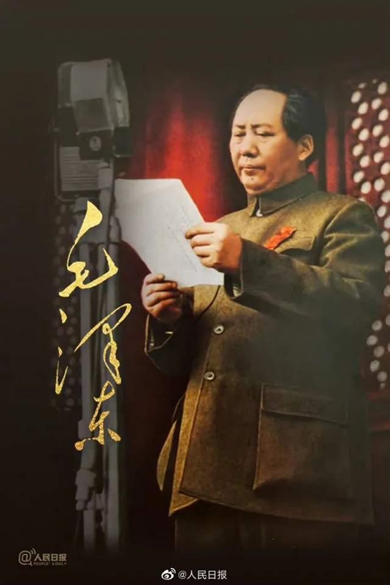
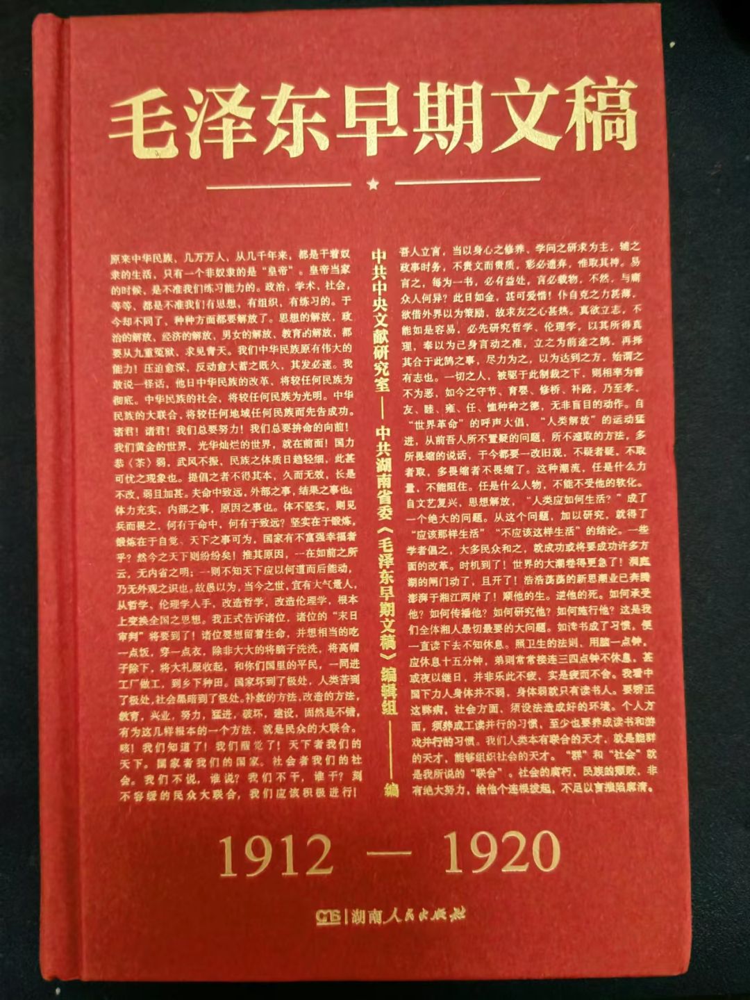

缅怀伟人的最好方式

上周12月26日是伟人130周年诞辰。
缅怀伟人，不能停留在表面，而应该学习伟人的精神，继承伟人的理想。
今天这篇是旧文微调，再次分享给大家。
- 1 -
读书重点是读作者的思考，学习针对某个事物的逻辑推导，进而化为己用，形成属于自己的认知和知识体系，能够作用于实践。从这个意义上讲，一些偏向于哲学、理论的书都挺好，但是投入产出比有些低了，更何况一些有年头的哲学思辨书籍已经落后于时代了，两千多年前的先贤著作当然有哲理，但真的“今人不如古人”吗？所以，想要提高认知，还需要破除一些对古典的痴迷，时间是宝贵的、思考也是宝贵的，尽量不要把精力浪费在阅读上。文字更加简单易懂，蕴含的道理越品越深，还能够与现实紧密结合，用古人的话说就是要“立德立功立言”，经过实践检验、能够改变客观现实的，那才是我们需要首先学习的，学有余力再去深挖也不迟。
小镇以为，非毛主席的书莫属，有三大优势：1、通俗易懂、内涵丰富，非把客观世界认识到足够高度不可能做到；2、循序渐进，切身感受一位年轻人如何成长；3、我们对毛主席谈及的事，太熟悉了，少了很多查资料的精力和时间。
- 2 -
那么该怎么读呢？顺序如何呢？（注：接下来推荐仅为方便查找，请注意出版社，由于受一些限制，接下来有的书籍名字有所调整，链接也打不开就不附带了，大家可以自行到京东、当当等平台购买。）第一阶段：先读《毛泽东早期文稿》，配合阅读《周恩来旅日日记》

湖南人民出版社版
本书收录毛主席1912至1920年的早期文稿，当时毛主席处于少年到青年阶段，尚未经受过革命的磨练，更接近我们普通人，通过读这本书，能够观察到一代伟人的成长经历，学习伟人调查、分析社会的方法。《周恩来旅日日记》记载周总理1918-1919年两年的旅日思考，当时周总理不过20岁，心境与当下多数人更近，300多页12万字的日记对周总理的心路历程描述也更为细致。（这本书未再刊印，价格非常贵，影印版也不太清晰，单读《早期文稿》也可）
这两本书可以形成搭配，以《毛泽东早期文稿》学习方法论，感悟伟人的成长，进而武装自己；读《周恩来旅日日记》感悟伟人每日的学习、生活、社交和情绪的变化，尤其是感悟思想上的重大转折是如何发生的，有助于普通人在迷茫中立大志。
第二阶段：人民出版社《毛泽东选集》四卷本，搭配中央文献研究室的《毛主席传》预想到肯定有朋友留言问有五卷甚至七卷，这就是不同年代、不同出版社的区别，当然有些内容在后来的编纂中去掉了，但没必要纠结。因为我们要学习的是伟人的思想和认知，是为了武装我们自己，在小镇看来，其实第一卷已经足够了，这一卷主要汇总1925-1937年的重要文稿，涉及第一次国内革命战争时期、第二次革命战争时期，我们熟悉的“反对本本主义”“阶级分析”“中国革命的战略思考”以及“实践论”“矛盾论”都在这一卷。
1925年主席32岁，1937年主席44岁，有多少人努力一辈子能达到主席30岁的认知水平？已经足够了，没必要好高骛远。当然，其他各卷还是要读的，触类旁通，多学多思。读《毛选》，不能干读，《毛选》展示的是思考的最终成果，读懂需要有一个系统的认知，要把主席的生平、经历搞清楚，思考主席到底是因为什么才写下了这些著作，否则就会停在表面。因此推荐中央文献研究室出版《毛主席传》，当然类似的传记很多，包括西方的，但还是要先从正统开始，再去看其他的。
第三阶段：中央文献研究室《毛泽东文集》（8卷本）
《毛泽东选集》选的是大成之作，但对于普罗大众来说，只见山高，不了解高山是如何铸就的。篇幅是选集5倍以上的文集，搜集了更多、更详尽的文章，能够让我们更加深刻的了解主席是如何进行具体研究的。
比如昨天在《有些人，到底在怕什么？》举例的《寻乌调查》，在第1卷118-245页，内容非常详尽，好好学习能够让我们领会毛主席当年是如何对一个地区进行调研，都采集了哪些信息，以及这些调研信息如何支持后来的决策。
这更有利于我们向伟人学习，提高自己。
第四阶段：拓展，两个方向加深对主席的深度认知，读《毛主席读书笔记精讲》（广西人民出版社版本），体会主席是如何读书的。如有余力，还可以读700多万字的20册本《建国以来文稿》等等，会有更深启发。伟人的书，常读常新，这就是伟人赠给后人的瑰宝。
其他文章推荐
■ 有些人，到底在怕什么？
如果喜欢，还请点赞、“在看”和关注吧 欢迎分享，让更多人发现“大树乡谈”
除本号外，小镇仅在以下两号 发文
请注意辨别，欢迎关注